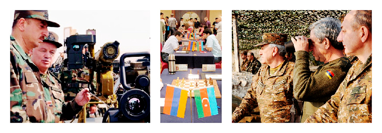
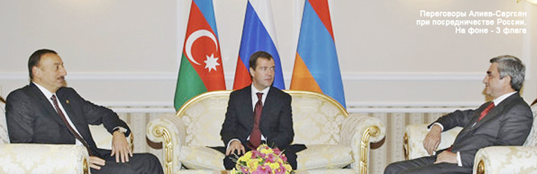
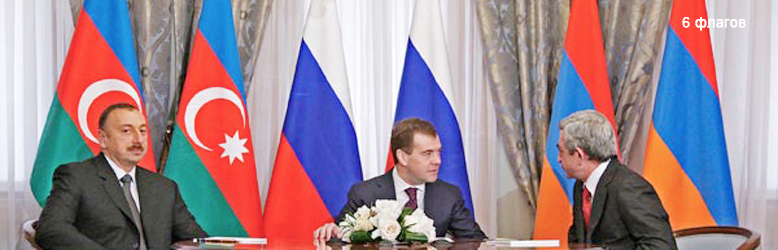
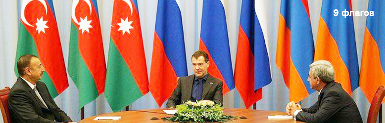
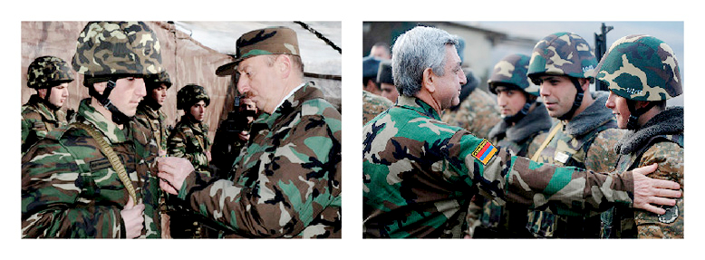
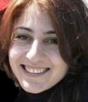
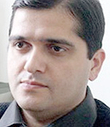

ПОЛИТИКА И ЭКОНОМИКА МИРОТВОРЧЕСТВА
Нагорно-карабахский конфликт это не только война, многочисленные жертвы, разрушенные города и села, но это и изнуряющий переговорный процесс, которому нет конца, это контакты, дискуссии между общественными деятелями, активистами и журналистами Азербайджана и Армении.
К сожалению, до сих пор военная риторика превалирует над всеми другими возможностями разрешения конфликта. Но в Армении и в Азербайджане часть общества все-таки верит, что единственно верное решение конфликта это переговоры, дискуссии на разные темы, в общем, возможность простого общения между людьми. Хотя власть и в Азербайджане, и в Армении считает, что переговоры и возможности достижения мира это их прерогатива.
К сожалению, до сих пор военная риторика превалирует над всеми другими возможностями разрешения конфликта. Но в Армении и в Азербайджане часть общества все-таки верит, что единственно верное решение конфликта это переговоры, дискуссии на разные темы, в общем, возможность простого общения между людьми. Хотя власть и в Азербайджане, и в Армении считает, что переговоры и возможности достижения мира это их прерогатива.
ИЗ ИСТОРИИ
Начавшийся еще в последние годы СССР конфликт в Нагорном Карабахе унес жизни более десятка тысяч людей, разрушено много судеб. Неразрешенность конфликта ставит под сомнение будущее Армении и Азербайджана. Поэтому еще тогда некоторые активисты с обеих сторон поняли, что война это не путь решения, надо договариваться, а для этого нужен активный диалог.
Пионерами таких встреч были представители Хельсинской Гражданской Ассамблеи в Азербайджане и в Армении Арзу Абдуллаева и Анаит Баяндур. Одна из первых инициатив под названием «Караван мира», организованная в 1991 году армянским, азербайджанским и грузинским отделениями Ассамблеи, создала возможности для встречи активистов гражданского общества Армении и Азербайджана на армяно-азербайджанской границе в Газах - Иджеване для обсуждения перспектив урегулирования конфликта и вопроса подготовки совместного мирного воззвания.
Были и другие встречи. Летом 1992-го года, когда над Карабахом гремела канонада, некоторые представители творческой интеллигенции Армении и Азербайджана встретились на границе. Целью встречи было прекращение войны, начало мирного диалога. Память о добрососедских, дружеских отношениях между двумя народами были еще свежи. Но тогда интеллигенцию никто не услышал, разгоралась самая настоящая война, и миротворчество не было такой популярной темой как сейчас. Уже в последующие годы даже самые горячие головы начали понимать бессмысленность завоевания при помощи оружия.
В те годы вопрос финансирования такого рода встреч не стоял так остро, как сейчас. Как вспоминает Арзу Абдуллаева, свои сбережения, премиальные деньги международных организаций она тратила на поездки, на транспорт и организацию встреч. Важно было также личное отношение к процессу миротворчества, как в случае с руководителем регионального представительства в Армении Фонда «Евразия-Партнерство» Геворгом Тер-Габриеляном. В 1990 году он создал одно из первых НПО в Армении и, связываясь с азербайджанскими коллегами по телефону, узнавал, что происходит у них, затем передавал информацию местным газетам. «Никто меня не финансировал», - отмечает он.
Первый опыт миротворчества был далек от системного подхода к разрешению конфликта. Зато были первые результаты. Например, именно при помощи первых миротворцев были освобождены сотни пленных и заложников, родственники с той и другой стороны узнавали о месте нахождения близких. Первые политики той поры тоже встречались и даже договаривались. Но сильна была еще «третья сила», которой, нужен был конфликт.
В начале 90-х встречи происходят в основном на территории России, поэтому очень часто модераторами на этих мероприятиях были российские политики и общественные деятели. Встречались представители народных движений и политических партий двух стран, обсуждали конфликт, и пути нахождения приемлемых для сторон решений. На одной из таких встреч летом 1990 года между АОД и Народным Фронтом Азербайджана при посредничестве Балтийской Ассамблеи в Риге был разработан проект договоренности об обоюдном прекращении актов насилия, но его подписание было сорвано «неизвестными».
Форматы диалога были разными, после развала СССР встречи организовывались уже и в западных странах. Многие эксперты называют самым запоминающимся и длительным диалоговым проектом Дартмутскую конференцию.
Идея конференции в Дартмуте принадлежала американским и советским дипломатам. В начале 1960-х годов между США и СССР возникла реальная угроза ядерной войны. Уровень взаимного недоверия был столь высок, что Вашингтон и Москва не доверяли даже участникам официальных переговоров. Тогда некие мудрые люди предложили организовать неформальную встречу «бывших» - дипломатов, военных, разведчиков. Она состоялась в городке Дартмут. На этой встрече стороны убедились, что ни у одной стороны нет намерения начать ядерную войну. По мнению многих экспертов, в снятии напряженности между США и СССР как в то время, так и в начале 1980-х годов, Дартмутская конференция сыграла немаловажную роль.
После развала СССР Дартмутская конференция начала уделять большое внимание региональным конфликтам. Второй темой диалога стала гражданская война в Таджикистане. Идеи, выработанные участниками Дартмутской конференции, способствовали успеху межтаджикского диалога и завершению гражданской войны в Таджикистане.
После таджикского проекта следующей целью Дартмутской конференции стал нагорно-карабахский конфликт. Несколько лет американские, русские, армянские и азербайджанские дипломаты, эксперты и активисты встречались, говорили о путях разрешения конфликта. Встречи финансировал Фонд Кэтеринга из США, проходили же они только на территории России. В нагорно-карабахском конфликте участникам Дартмутской конференции не удалось добиться рождения прорывных идей.
По мнению экспертов, участвовавших в этих конференциях, одной из причин неудачи стало неразборчивое приглашение всех и вся на эти конференции. То есть состав конференции всякий раз менялся, а новые люди приходили с новыми, отличными от других, позициями. В такой ситуации найти общее решение было очень трудно. Поэтому в середине 2000-х годов этот процесс фактически был приостановлен. Но один успешный шаг все-таки был сделан. Идея промежуточного статуса для Нагорного Карабаха была рождена именно на Дартмутской конференции, и она была включена в последний план Минской Группы. В настоящее время идея промежуточного статуса для Нагорного Карабаха является одним из важных пунктов мирного разрешения конфликта.
Достоин внимания процесс, инициированный американской организацией «Global Community Foundation» из Калифорнии. Первая встреча была организована в 1993 году, активисты из Армении и Азербайджана поехали в Калифорнию и около недели обсуждали различные аспекты нагорно-карабахского конфликта и пути его мирного разрешения. Модератором на этих встречах был американский дипломат Гарольд Сондерс. Он известен тем, что в ранге помощника Государственного секретаря организовал встречи общественных деятелей Израиля и Палестины в Осло и добился выдающегося успеха. Вторая встреча также прошла в Калифорнии в 1994 году. Но даже дипломат такой высокой квалификации, как Гарольд Сондерс, не смог сблизить позиции сторон для мирного разрешения нагорно-карабахского конфликта. «Global Community» потратило на эти встречи и организацию поездок около 90 тысяч долларов.
По мнению Арзу Абдуллаевой, неудачи переговорного процесса в рядах гражданского общества обусловлены тем, что к разрешению конфликта нет системного подхода: «Международные организации проводят конференции и семинары, этим все и заканчивается. Тот, кто хорошо пишет проекты, тому дают деньги, а кто хорошо работает, но не силен в бумагах, тот в большинстве случаев остается в стороне».
Один из активных участников диалогов с армянскими коллегами, руководитель азербайджанского Общества Гуманитарных Исследований Аваз Гасанов тоже жалуется на несистемный подход международных организаций: «Нет концепции. Какой-то миротворческий проект финансируют один раз и на этом все заканчивается».
Независимый журналист, бывший активный участник миротворческих проектов Кямал Али оценивает ситуацию, опираясь на свой личный опыт: «В первые годы начала контактов общественности Азербайджана и Армении, а это было после 1999 года, западные доноры финансировали поездки журналистов и общественных деятелей Азербайджана и Армении для проведения встреч и конференций в Тбилиси, Баку, Ереван и Степанакерт-Ханкенди. Наши западные партнеры надеялись, что эти люди договорятся, найдут общий язык, и, вернувшись домой, распространят среди своих народов миротворческие настроения. Множество армянских и азербайджанских общественных деятелей, а также журналистов приняло участие в подобных проектах. Но, вернувшись домой, они или незначительно изменили свое мнение, прекратив писать оскорбительные материалы, или же не изменились вовсе».
Но, несмотря на пессимизм выводов Кямала Али, он все же считает диалог обязательным инструментом для решения проблемы. «Как минимум, азербайджанцы - участники встреч с армянскими коллегами, получают возможность ознакомиться с альтернативным мнением, передать соседям свою позицию, и осветить позицию соседней страны в своем СМИ. Азербайджанские читатели нуждаются в получении альтернативной информации, которая, как бы мало ее не было, оседает в сознании общества», заключил Кямал Али.
Другой активный участник диалоговых проектов с армянскими коллегами, председатель журналистского объединения «Ени несил» Ариф Алиев считает, что на эффективность миротворческих проектов негативно влияют безрезультатные официальные мирные переговоры, но есть и другие причины. «Государственный механизм не поддерживает миротворческий диалог. Если примерно до 2001 года журналисты могли обоюдно совершать визиты, то на данный момент такой возможности нет. Кроме того, некоторые НПО не подготовлены к диалогу», отмечает Ариф Алиев.
У армянских экспертов похожее мнение. Руководитель регионального представительства Фонда «Евразия-Партнерство» в Армении Геворг Тер-Габриелян считает, что у большинства доноров не хватает профессионализма в миротворческих проектах: «Очень нечасто и по очень особым случаям следует делать семинары и конференции между участниками конфликта. Обычно это говорильня и никуда не ведёт. Часто причина того, что конференции и семинары между участниками конфликта никуда не ведут и скучны, заключается в методологических вопросах. Дело в том, что двусторонний диалоговый процесс на уровне гражданского общества часто повторяет штампы и стереотипы государственного переговорного процесса. Так как в обеих странах нет полноценной демократии и гражданское общество не чувствует себя полностью независимым, встречающиеся представители его не смеют честно, открыто и откровенно искать новые, творческие выходы из тупика. Они предпочитают вести позиционный спор, точно такой же, как дипломаты. Представитель гражданского общества, который, казалось, не должен представлять своё государство, вдруг решает, что он есть посол своей нации и своего государства, и вот уж если он не повторит какой-нибудь старый тезис – типа территориальной целостности Азербайджана или независимости Карабаха, - то он не проявит себя во всей красе. Естественно, такие встречи никуда не ведут, так как обе стороны просто повторяют азы того, что и так является сутью противостояния, и не подвигаются никуда всерьёз».
Другой эксперт, представитель общественной организации «Интерньюс» Арутюн Мансурян, в свою очередь, с точки зрения миротворчества считает успешными 2000-2012 годы, хотя бы потому, что в начале 90-ых годов миром, по его словам, и не пахло. В качестве цели миротворческих проектов менеджер «Интерньюс» рассматривает утверждение мира посредством диалога и его сохранение. «Программы разные, и невозможно сказать, насколько они служат своей цели. Есть удачные, и не очень».
Мнение Мансуряна о том, что действительный миротворческий процесс начался именно в начале 2000 годов, разделили абсолютное большинство экспертов с обеих сторон. По мнению Аваза Гасанова, до конца 1990-х годов международные организации проводили только конференции и семинары, а начиная с 2000-х годов, начали финансировать миротворческие проекты.
Арзу Абдуллаева предлагает создание из группы экспертов-миротворцев из Армении и из Азербайджана консорциум миротворцев, куда входили бы и жители Нагорного Карабаха (армяне и азербайджанцы): «На основе этого консорциума мы могли бы создать независимую гражданскую Минскую Группу, где сопредседателями могли бы быть известные скандинавские дипломаты, такие например как швед Ян Елиассон или финн Хейкки Талвитие. Независимая Гражданская Минская Группа, как и Минская Группа ОБСЕ, могла бы стать постоянно действующим органом, занимающимся на концептуальной основе построением гражданского мира, организацией встреч активистов, простых людей».
Но кто будет финансировать эту идею? В Армении и в Азербайджане нет таких государственных, общественных и предпринимательских структур, которые бы решились на финансирование данного проекта. Вот и приходится смотреть в сторону Запада.
Пионерами таких встреч были представители Хельсинской Гражданской Ассамблеи в Азербайджане и в Армении Арзу Абдуллаева и Анаит Баяндур. Одна из первых инициатив под названием «Караван мира», организованная в 1991 году армянским, азербайджанским и грузинским отделениями Ассамблеи, создала возможности для встречи активистов гражданского общества Армении и Азербайджана на армяно-азербайджанской границе в Газах - Иджеване для обсуждения перспектив урегулирования конфликта и вопроса подготовки совместного мирного воззвания.
Были и другие встречи. Летом 1992-го года, когда над Карабахом гремела канонада, некоторые представители творческой интеллигенции Армении и Азербайджана встретились на границе. Целью встречи было прекращение войны, начало мирного диалога. Память о добрососедских, дружеских отношениях между двумя народами были еще свежи. Но тогда интеллигенцию никто не услышал, разгоралась самая настоящая война, и миротворчество не было такой популярной темой как сейчас. Уже в последующие годы даже самые горячие головы начали понимать бессмысленность завоевания при помощи оружия.
В те годы вопрос финансирования такого рода встреч не стоял так остро, как сейчас. Как вспоминает Арзу Абдуллаева, свои сбережения, премиальные деньги международных организаций она тратила на поездки, на транспорт и организацию встреч. Важно было также личное отношение к процессу миротворчества, как в случае с руководителем регионального представительства в Армении Фонда «Евразия-Партнерство» Геворгом Тер-Габриеляном. В 1990 году он создал одно из первых НПО в Армении и, связываясь с азербайджанскими коллегами по телефону, узнавал, что происходит у них, затем передавал информацию местным газетам. «Никто меня не финансировал», - отмечает он.
Первый опыт миротворчества был далек от системного подхода к разрешению конфликта. Зато были первые результаты. Например, именно при помощи первых миротворцев были освобождены сотни пленных и заложников, родственники с той и другой стороны узнавали о месте нахождения близких. Первые политики той поры тоже встречались и даже договаривались. Но сильна была еще «третья сила», которой, нужен был конфликт.
В начале 90-х встречи происходят в основном на территории России, поэтому очень часто модераторами на этих мероприятиях были российские политики и общественные деятели. Встречались представители народных движений и политических партий двух стран, обсуждали конфликт, и пути нахождения приемлемых для сторон решений. На одной из таких встреч летом 1990 года между АОД и Народным Фронтом Азербайджана при посредничестве Балтийской Ассамблеи в Риге был разработан проект договоренности об обоюдном прекращении актов насилия, но его подписание было сорвано «неизвестными».
Форматы диалога были разными, после развала СССР встречи организовывались уже и в западных странах. Многие эксперты называют самым запоминающимся и длительным диалоговым проектом Дартмутскую конференцию.
Идея конференции в Дартмуте принадлежала американским и советским дипломатам. В начале 1960-х годов между США и СССР возникла реальная угроза ядерной войны. Уровень взаимного недоверия был столь высок, что Вашингтон и Москва не доверяли даже участникам официальных переговоров. Тогда некие мудрые люди предложили организовать неформальную встречу «бывших» - дипломатов, военных, разведчиков. Она состоялась в городке Дартмут. На этой встрече стороны убедились, что ни у одной стороны нет намерения начать ядерную войну. По мнению многих экспертов, в снятии напряженности между США и СССР как в то время, так и в начале 1980-х годов, Дартмутская конференция сыграла немаловажную роль.
После развала СССР Дартмутская конференция начала уделять большое внимание региональным конфликтам. Второй темой диалога стала гражданская война в Таджикистане. Идеи, выработанные участниками Дартмутской конференции, способствовали успеху межтаджикского диалога и завершению гражданской войны в Таджикистане.
После таджикского проекта следующей целью Дартмутской конференции стал нагорно-карабахский конфликт. Несколько лет американские, русские, армянские и азербайджанские дипломаты, эксперты и активисты встречались, говорили о путях разрешения конфликта. Встречи финансировал Фонд Кэтеринга из США, проходили же они только на территории России. В нагорно-карабахском конфликте участникам Дартмутской конференции не удалось добиться рождения прорывных идей.
По мнению экспертов, участвовавших в этих конференциях, одной из причин неудачи стало неразборчивое приглашение всех и вся на эти конференции. То есть состав конференции всякий раз менялся, а новые люди приходили с новыми, отличными от других, позициями. В такой ситуации найти общее решение было очень трудно. Поэтому в середине 2000-х годов этот процесс фактически был приостановлен. Но один успешный шаг все-таки был сделан. Идея промежуточного статуса для Нагорного Карабаха была рождена именно на Дартмутской конференции, и она была включена в последний план Минской Группы. В настоящее время идея промежуточного статуса для Нагорного Карабаха является одним из важных пунктов мирного разрешения конфликта.
Достоин внимания процесс, инициированный американской организацией «Global Community Foundation» из Калифорнии. Первая встреча была организована в 1993 году, активисты из Армении и Азербайджана поехали в Калифорнию и около недели обсуждали различные аспекты нагорно-карабахского конфликта и пути его мирного разрешения. Модератором на этих встречах был американский дипломат Гарольд Сондерс. Он известен тем, что в ранге помощника Государственного секретаря организовал встречи общественных деятелей Израиля и Палестины в Осло и добился выдающегося успеха. Вторая встреча также прошла в Калифорнии в 1994 году. Но даже дипломат такой высокой квалификации, как Гарольд Сондерс, не смог сблизить позиции сторон для мирного разрешения нагорно-карабахского конфликта. «Global Community» потратило на эти встречи и организацию поездок около 90 тысяч долларов.
По мнению Арзу Абдуллаевой, неудачи переговорного процесса в рядах гражданского общества обусловлены тем, что к разрешению конфликта нет системного подхода: «Международные организации проводят конференции и семинары, этим все и заканчивается. Тот, кто хорошо пишет проекты, тому дают деньги, а кто хорошо работает, но не силен в бумагах, тот в большинстве случаев остается в стороне».
Один из активных участников диалогов с армянскими коллегами, руководитель азербайджанского Общества Гуманитарных Исследований Аваз Гасанов тоже жалуется на несистемный подход международных организаций: «Нет концепции. Какой-то миротворческий проект финансируют один раз и на этом все заканчивается».
Независимый журналист, бывший активный участник миротворческих проектов Кямал Али оценивает ситуацию, опираясь на свой личный опыт: «В первые годы начала контактов общественности Азербайджана и Армении, а это было после 1999 года, западные доноры финансировали поездки журналистов и общественных деятелей Азербайджана и Армении для проведения встреч и конференций в Тбилиси, Баку, Ереван и Степанакерт-Ханкенди. Наши западные партнеры надеялись, что эти люди договорятся, найдут общий язык, и, вернувшись домой, распространят среди своих народов миротворческие настроения. Множество армянских и азербайджанских общественных деятелей, а также журналистов приняло участие в подобных проектах. Но, вернувшись домой, они или незначительно изменили свое мнение, прекратив писать оскорбительные материалы, или же не изменились вовсе».
Но, несмотря на пессимизм выводов Кямала Али, он все же считает диалог обязательным инструментом для решения проблемы. «Как минимум, азербайджанцы - участники встреч с армянскими коллегами, получают возможность ознакомиться с альтернативным мнением, передать соседям свою позицию, и осветить позицию соседней страны в своем СМИ. Азербайджанские читатели нуждаются в получении альтернативной информации, которая, как бы мало ее не было, оседает в сознании общества», заключил Кямал Али.
Другой активный участник диалоговых проектов с армянскими коллегами, председатель журналистского объединения «Ени несил» Ариф Алиев считает, что на эффективность миротворческих проектов негативно влияют безрезультатные официальные мирные переговоры, но есть и другие причины. «Государственный механизм не поддерживает миротворческий диалог. Если примерно до 2001 года журналисты могли обоюдно совершать визиты, то на данный момент такой возможности нет. Кроме того, некоторые НПО не подготовлены к диалогу», отмечает Ариф Алиев.
У армянских экспертов похожее мнение. Руководитель регионального представительства Фонда «Евразия-Партнерство» в Армении Геворг Тер-Габриелян считает, что у большинства доноров не хватает профессионализма в миротворческих проектах: «Очень нечасто и по очень особым случаям следует делать семинары и конференции между участниками конфликта. Обычно это говорильня и никуда не ведёт. Часто причина того, что конференции и семинары между участниками конфликта никуда не ведут и скучны, заключается в методологических вопросах. Дело в том, что двусторонний диалоговый процесс на уровне гражданского общества часто повторяет штампы и стереотипы государственного переговорного процесса. Так как в обеих странах нет полноценной демократии и гражданское общество не чувствует себя полностью независимым, встречающиеся представители его не смеют честно, открыто и откровенно искать новые, творческие выходы из тупика. Они предпочитают вести позиционный спор, точно такой же, как дипломаты. Представитель гражданского общества, который, казалось, не должен представлять своё государство, вдруг решает, что он есть посол своей нации и своего государства, и вот уж если он не повторит какой-нибудь старый тезис – типа территориальной целостности Азербайджана или независимости Карабаха, - то он не проявит себя во всей красе. Естественно, такие встречи никуда не ведут, так как обе стороны просто повторяют азы того, что и так является сутью противостояния, и не подвигаются никуда всерьёз».
Другой эксперт, представитель общественной организации «Интерньюс» Арутюн Мансурян, в свою очередь, с точки зрения миротворчества считает успешными 2000-2012 годы, хотя бы потому, что в начале 90-ых годов миром, по его словам, и не пахло. В качестве цели миротворческих проектов менеджер «Интерньюс» рассматривает утверждение мира посредством диалога и его сохранение. «Программы разные, и невозможно сказать, насколько они служат своей цели. Есть удачные, и не очень».
Мнение Мансуряна о том, что действительный миротворческий процесс начался именно в начале 2000 годов, разделили абсолютное большинство экспертов с обеих сторон. По мнению Аваза Гасанова, до конца 1990-х годов международные организации проводили только конференции и семинары, а начиная с 2000-х годов, начали финансировать миротворческие проекты.
Арзу Абдуллаева предлагает создание из группы экспертов-миротворцев из Армении и из Азербайджана консорциум миротворцев, куда входили бы и жители Нагорного Карабаха (армяне и азербайджанцы): «На основе этого консорциума мы могли бы создать независимую гражданскую Минскую Группу, где сопредседателями могли бы быть известные скандинавские дипломаты, такие например как швед Ян Елиассон или финн Хейкки Талвитие. Независимая Гражданская Минская Группа, как и Минская Группа ОБСЕ, могла бы стать постоянно действующим органом, занимающимся на концептуальной основе построением гражданского мира, организацией встреч активистов, простых людей».
Но кто будет финансировать эту идею? В Армении и в Азербайджане нет таких государственных, общественных и предпринимательских структур, которые бы решились на финансирование данного проекта. Вот и приходится смотреть в сторону Запада.

СПОНСОРЫ И ИХ ПОДХОДЫ
В конце 1990-х Посольство США в Азербайджане выделило 230 тысяч долларов на организацию видеомостов между представителями общественности Армении и Азербайджана. Прошло 24 таких телемостов в прямой трансляции. Большинство встреч прошло в бесплодных спорах. Самым по человечески трогательным, искренним и полезным оказался диалог между двумя товарищами, футболистами Эдуардом Маркаровым и Валерием Гаджиевым.
Один из самых известных совместных проектов релизовывался Бакинским и Ереванским Пресс Клубами. По словам, Арифа Алиева, на осуществление данного проекта было затрачено 225 тысяч долларов. Это обоюдные поездки журналистов, конференции, семинары и т.д. Были проекты и на меньшие суммы. Кямал Али вспоминает ливанского армянина Виген Чтряна, который получил гражданство Швейцарии, создал общественный Институт и получил грант МИД-а Швейцарии на проект для поездок журналистов трех стран в Армению, Грузию и Азербайджан. Кямал Али был руководителем проекта со стороны Азербайджана и на приезд армянских журналистов в Баку, на проведение конференции ему было выделено около 10 тысяч долларов.
С 2000 года к финансированию миротворческого процесса подключились Европейский Союз, Британское правительство, немецкие фонды Наумана, Эберта, Белля, американские фонды Сороса и Евразия. Именно на грант Фонда Сороса в сентябре 2001-го года в Баку приехала группа миротворцев из Нагорного Карабаха, против которых властями была устроена провокация. После этой провокации власти Азербайджана ввели полный запрет на приезд армянских активистов НПО по приглашению азербайджанских НПО, и монополизировали контакты с армянской стороной в Баку.
По мнению экспертов, и по статистике, и по объему финансирования миротворческого процесса между Арменией и Азербайджаном лидерство принадлежит ЕС, за ним следуют Великобритания и США.
Первый транш на миротворчество ЕС выделил в 2006 году. Проект продолжался 2 года. В Азербайджане за этот период на основе тендера было выявлено несколько НПО, которые участвовали в разных миротворческих проектах. Второй этап финансирования миротворчества начался в 2009 году и продолжался до 2011 года. Третий этап рассчитан уже на 3 года. За весь этот период ЕС выделило больше 5 миллионов долларов на построение мира.
Как было отмечено выше, США, начиная с 1990 годов, проявляли интерес к миротворчеству на Южном Кавказе. Великобритания подключилась к этому процессу в начале 2000 годов. МИД Великобритании выделил бюджет для консорциума британских НПО, которые активно подключились к построению мира на Южном Кавказе. Две такие организации, как International Alert и LINKS, уже имели опыт работы с южно-кавказскими организациями. Что касается LINKS-а, азербайджанские независимые эксперты считают проекты этой организации малопродуктивной. LINKS в основном работало с людьми из государственных структур и депутатами Армении и Азербайджана. «Ну, встречались депутаты в Лондоне или в других европейских столицах, жили в шикарных отелях, но ничего путного из их общения не вышло. Да потому, что и в Азербайджане, и в Армении нет независимых депутатов, которые могли бы без разрешения исполнительных властей что-то предложить для решения конфликта» - отметил журналист и ветеран миротворческих встреч Керим Керимли. Некоторые азербайджанские политологи не остались удовлетворенными и встречами в рамках International Alert. Один из экспертов отметил, что несколько лет участвовал в работе International Alert, но и здесь системного подхода не ощущалось: «На мероприятия приглашали ястребов, а они ни к какому соглашению прийти не могут, поэтому в дальнейшем я уже отказался от участия в этих встречах».
В отличие от этих экспертов Аваз Гасанов давний партнер International Alert и участвует в ее проектах. Последний проект International Alert был осуществлен в 2012 году. В Баку, в Ереване, в столице Нагорного Карабаха были проведены конференции по изучению опыта разрешения Североирландского конфликта. Приехали непосредственные участники разрешения конфликта. Они поделились своим опытом. На осуществление этого проекта было выделено около 200 тысяч долларов.
Почему же из всех стран ЕС именно Великобритания так активно участвует в миротворческом процессе между Азербайджаном и Арменией? Например, не менее богатая Германия в основном финансирует грузинские проекты. По мнению одного из азербайджанских политологов, секрет активности Лондона кроется в энергоресурсах Азербайджана: «БП – вот главный фактор. Инвестиции этой фирмы в Азербайджане давно перевалили за десятки миллиардов долларов, а прибыль еще больше. БП один из главных налогоплательщиков Великобритании, так кто же, как не Лондон должен проявлять интерес к стабильности на Южном Кавказе и разрешению Нагорно-Карабахского конфликта?» - заключил политолог.
В 2012 году Посольство Великобритании в Армении финансировало 3 программы. Например, еженедельная информационно-аналитическая программа «Перекресток» (общественная организация содействия СМИ «Интернюьс»), которой занимается уже седьмое поколение, - в этом году ей было выделено 65 тысяч фунтов стерлингов. На осуществление трех программ посольство Великобритании в Армении выделило 139 059 фунтов. При этом отмечается, что в целом выделяется гораздо больше средств, например, в виде прямых грантов британским организациям – порядка 300 тысяч фунтов. По окончании проекта организация представляет доклад и финансовый отчет. Кроме того, донор продолжает следить за деятельностью участников проекта и после его завершения, чтобы понять, повлияло ли на данного участника то или иное мероприятие.
Никто из опрошенных экспертов и представителей различных структур не берется оценивать эффективность миротворческих проектов, учитывая степень сложности данного конфликта.
Рассмотрим миротворческий проект «Кинодиалоги», осуществление которого началось в 2006 году при поддержке британской НПО «Ресурсы примирения» и степанакертского пресс-клуба при участии общественных организаций по содействию СМИ «Интерньюс» Армении и Азербайджана. До 2010 года проект финансировался за счет гранта правительства Великобритании через Фонд предотвращения конфликтов. Затем средства для проекта выделил Европейский Союз в рамках программы Европейского партнерства по мирному урегулированию карабахского конфликта.
Цель проекта - объединить молодых людей из Карабаха и Азербайджана для создания короткометражных документальных фильмов о карабахском конфликте. За несколько лет работы в проекте молодые люди из Азербайджана и Нагорного Карабаха создали более 20 фильмов, пять из которых являются совместными. Авторами фильмов становились не все участники проекта, сообщил продюсер проекта «Кинодиалоги» Арутюн Мансурян. Однако некоторые участники с обеих сторон успели снять по 2-3 ленты.
Мансурян затруднился представить списки участников, так как эти данные находятся в архивах, где хранится информация о 5-6 годах работы. Что касается финансирования, то, скажем, на данном этапе бюджет программы на производство фильмов составляет 51 268 евро – сюда входят ряд семинаров с 5 участниками, 6 семинаров и практика, одни из них состоятся в Тбилиси, другие – в Степанакерте.
В интервью одному из интернет-порталов Мансурян заявил, что и сами фильмы, и работа над ними изменяли и людей, и их отношение к конфликту: «Фильмы - документалистика, зафиксированная ситуация и человеческие судьбы... Несколько десятков людей работали в проекте, и в их жизнях что-то изменилось. Может, не очень многое, может, мы не достигли той толерантности, что мы хотели, но у этих людей что-то изменилось в мировоззрении… Результат проекта – это общественные дискуссии. Все наши фильмы задают вопросы, и мы хотим, чтобы каждый для себя поискал ответы на эти вопросы. Любой ответ, который человек для себя найдет, изменит ситуацию, как мы считаем, к лучшему».
Один из самых известных совместных проектов релизовывался Бакинским и Ереванским Пресс Клубами. По словам, Арифа Алиева, на осуществление данного проекта было затрачено 225 тысяч долларов. Это обоюдные поездки журналистов, конференции, семинары и т.д. Были проекты и на меньшие суммы. Кямал Али вспоминает ливанского армянина Виген Чтряна, который получил гражданство Швейцарии, создал общественный Институт и получил грант МИД-а Швейцарии на проект для поездок журналистов трех стран в Армению, Грузию и Азербайджан. Кямал Али был руководителем проекта со стороны Азербайджана и на приезд армянских журналистов в Баку, на проведение конференции ему было выделено около 10 тысяч долларов.
С 2000 года к финансированию миротворческого процесса подключились Европейский Союз, Британское правительство, немецкие фонды Наумана, Эберта, Белля, американские фонды Сороса и Евразия. Именно на грант Фонда Сороса в сентябре 2001-го года в Баку приехала группа миротворцев из Нагорного Карабаха, против которых властями была устроена провокация. После этой провокации власти Азербайджана ввели полный запрет на приезд армянских активистов НПО по приглашению азербайджанских НПО, и монополизировали контакты с армянской стороной в Баку.
По мнению экспертов, и по статистике, и по объему финансирования миротворческого процесса между Арменией и Азербайджаном лидерство принадлежит ЕС, за ним следуют Великобритания и США.
Первый транш на миротворчество ЕС выделил в 2006 году. Проект продолжался 2 года. В Азербайджане за этот период на основе тендера было выявлено несколько НПО, которые участвовали в разных миротворческих проектах. Второй этап финансирования миротворчества начался в 2009 году и продолжался до 2011 года. Третий этап рассчитан уже на 3 года. За весь этот период ЕС выделило больше 5 миллионов долларов на построение мира.
Как было отмечено выше, США, начиная с 1990 годов, проявляли интерес к миротворчеству на Южном Кавказе. Великобритания подключилась к этому процессу в начале 2000 годов. МИД Великобритании выделил бюджет для консорциума британских НПО, которые активно подключились к построению мира на Южном Кавказе. Две такие организации, как International Alert и LINKS, уже имели опыт работы с южно-кавказскими организациями. Что касается LINKS-а, азербайджанские независимые эксперты считают проекты этой организации малопродуктивной. LINKS в основном работало с людьми из государственных структур и депутатами Армении и Азербайджана. «Ну, встречались депутаты в Лондоне или в других европейских столицах, жили в шикарных отелях, но ничего путного из их общения не вышло. Да потому, что и в Азербайджане, и в Армении нет независимых депутатов, которые могли бы без разрешения исполнительных властей что-то предложить для решения конфликта» - отметил журналист и ветеран миротворческих встреч Керим Керимли. Некоторые азербайджанские политологи не остались удовлетворенными и встречами в рамках International Alert. Один из экспертов отметил, что несколько лет участвовал в работе International Alert, но и здесь системного подхода не ощущалось: «На мероприятия приглашали ястребов, а они ни к какому соглашению прийти не могут, поэтому в дальнейшем я уже отказался от участия в этих встречах».
В отличие от этих экспертов Аваз Гасанов давний партнер International Alert и участвует в ее проектах. Последний проект International Alert был осуществлен в 2012 году. В Баку, в Ереване, в столице Нагорного Карабаха были проведены конференции по изучению опыта разрешения Североирландского конфликта. Приехали непосредственные участники разрешения конфликта. Они поделились своим опытом. На осуществление этого проекта было выделено около 200 тысяч долларов.
Почему же из всех стран ЕС именно Великобритания так активно участвует в миротворческом процессе между Азербайджаном и Арменией? Например, не менее богатая Германия в основном финансирует грузинские проекты. По мнению одного из азербайджанских политологов, секрет активности Лондона кроется в энергоресурсах Азербайджана: «БП – вот главный фактор. Инвестиции этой фирмы в Азербайджане давно перевалили за десятки миллиардов долларов, а прибыль еще больше. БП один из главных налогоплательщиков Великобритании, так кто же, как не Лондон должен проявлять интерес к стабильности на Южном Кавказе и разрешению Нагорно-Карабахского конфликта?» - заключил политолог.
В 2012 году Посольство Великобритании в Армении финансировало 3 программы. Например, еженедельная информационно-аналитическая программа «Перекресток» (общественная организация содействия СМИ «Интернюьс»), которой занимается уже седьмое поколение, - в этом году ей было выделено 65 тысяч фунтов стерлингов. На осуществление трех программ посольство Великобритании в Армении выделило 139 059 фунтов. При этом отмечается, что в целом выделяется гораздо больше средств, например, в виде прямых грантов британским организациям – порядка 300 тысяч фунтов. По окончании проекта организация представляет доклад и финансовый отчет. Кроме того, донор продолжает следить за деятельностью участников проекта и после его завершения, чтобы понять, повлияло ли на данного участника то или иное мероприятие.
Никто из опрошенных экспертов и представителей различных структур не берется оценивать эффективность миротворческих проектов, учитывая степень сложности данного конфликта.
Рассмотрим миротворческий проект «Кинодиалоги», осуществление которого началось в 2006 году при поддержке британской НПО «Ресурсы примирения» и степанакертского пресс-клуба при участии общественных организаций по содействию СМИ «Интерньюс» Армении и Азербайджана. До 2010 года проект финансировался за счет гранта правительства Великобритании через Фонд предотвращения конфликтов. Затем средства для проекта выделил Европейский Союз в рамках программы Европейского партнерства по мирному урегулированию карабахского конфликта.
Цель проекта - объединить молодых людей из Карабаха и Азербайджана для создания короткометражных документальных фильмов о карабахском конфликте. За несколько лет работы в проекте молодые люди из Азербайджана и Нагорного Карабаха создали более 20 фильмов, пять из которых являются совместными. Авторами фильмов становились не все участники проекта, сообщил продюсер проекта «Кинодиалоги» Арутюн Мансурян. Однако некоторые участники с обеих сторон успели снять по 2-3 ленты.
Мансурян затруднился представить списки участников, так как эти данные находятся в архивах, где хранится информация о 5-6 годах работы. Что касается финансирования, то, скажем, на данном этапе бюджет программы на производство фильмов составляет 51 268 евро – сюда входят ряд семинаров с 5 участниками, 6 семинаров и практика, одни из них состоятся в Тбилиси, другие – в Степанакерте.
В интервью одному из интернет-порталов Мансурян заявил, что и сами фильмы, и работа над ними изменяли и людей, и их отношение к конфликту: «Фильмы - документалистика, зафиксированная ситуация и человеческие судьбы... Несколько десятков людей работали в проекте, и в их жизнях что-то изменилось. Может, не очень многое, может, мы не достигли той толерантности, что мы хотели, но у этих людей что-то изменилось в мировоззрении… Результат проекта – это общественные дискуссии. Все наши фильмы задают вопросы, и мы хотим, чтобы каждый для себя поискал ответы на эти вопросы. Любой ответ, который человек для себя найдет, изменит ситуацию, как мы считаем, к лучшему».

МИРОТВОРЧЕСТВО: МЕЖДУНАРОДНЫЕ КОНФЕРЕНЦИИ И СЕМИНАРЫ ИЛИ ВСТРЕЧИ
И ОБСУЖДЕНИЯ
НА МЕСТАХ?
Предсказать результаты встреч невозможно, а зачастую результаты как таковые отсутствуют, однако встречаться представителям армянского и азербайджанского обществ необходимо. Эта фраза может служить своеобразной формулой миротворчества, так как практически каждый участник того или иного совместного армяно-азербайджанского проекта видит необходимость в непосредственном общении.
По мнению Геворга Тер-Габриеляна, основная разница двух этапов миротворчества (1992-2000 и 2000-2012) заключается в том, что до 2001 года армяне могли посещать Азербайджан для встреч по миротворческим проектам: «С тех пор поездки армян в Азербайджан происходят только по очень особым случаям. Азербайджанцам в Армению въезд доступнее, но они не хотят приезжать, так как дома к ним не отнесутся с пониманием. Поэтому мало азербайджанцев приезжает в Армению на проекты. Уж не говоря про посещение Карабаха. Между тем, возможность посетить другую сторону - это огромной силы способ преодолеть стереотипы, понять самому, установить отношения. Отмечу, что тот факт, что турки и армяне могут свободно посещать страны друг друга, помогает построению доверия в огромной степени, несмотря на отсутствие дипотношений».
«Построение образа врага в лице друг друга и в Армении, и в Азербайджане, стало основным способом построения идентичности - национальной, государственной; а также то, что любые диалоги гражданского общества, которые вели лишь к пониманию другой стороны и к маленьким совместным достижениям, интерпретировались азербайджанскими властями как способ растянуть статус-кво, т.е. и далее утвердить в сознании международного сообщества и самих жителей двух стран и НК, что Карабах - армянский, и это не изменится», - продолжает Тер-Габриелян.
По его мнению, чтобы диалог между гражданскими обществами сторон вышел из тупика и вёл куда-то, нужен креативный подход, нужно чувство свободы.
Другое дело, что ситуация усугубляется дальнейшим завинчиванием гаек, пиаровской войной, пропагандистской войной, интернет-войной, снайперской войной, пропагандой нетерпимости в собственных обществах. Так что, считает эксперт, те, кто сегодня всерьёз занимается миротворчеством - не декларациями, а серьёзной работой - часто должны прилагать неимоверные усилия, чтобы не быть интерпретированными как изгои в собственном обществе. И, несмотря на это, наличие людей, которые согласны встречаться и налаживать контакты и связи и обсуждать вопросы, очень важно. Это и потенциал для предотвращения эскалации, и задел для будущего, когда в основу переговорного процесса будут положены более осмысленные идеи.
«Так как Карабах - непризнанная территория, то туда почти не идёт международное развитие. Азербайджан запрещает проекты там, если они будут осуществляться через Армению. А через Азербайджан туда доступа почти нет - только иногда Минская группа может пересечь линию противостояния, или представители гражданского общества, действующие под эгидой президентов. А это очень нечасто случается. Так, карабахские жители оказываются отсечёнными от доступа к международным проектам по развитию, по демократии, по правам человека, по гражданскому обществу и т.д.». По словам Тер-Габриеляна, с беженцами была такая же ситуация. Правда, надо учитывать, что беженцы азербайджанцы, естественно, более ранены психологически, они выселены из своих домов. Так же, как и беженцы-армяне: «А те карабахцы армяне, что сегодня живут в НК, они, конечно, испытывают чувство удовольствия от того, что победили в горячей войне. Но где развитие? Где процветание? Почему столько людей оттуда уезжает? Почему из Армении столькие уезжают? Почему в Азербайджане свобода слова так ограничена? Мы видим, что конфликт далеко не завершён, что обеим сторонам, включая карабахцев, есть, о чём подумать. И то, что вначале британский, а затем евросоюзовский консорциум позволил карабахцам напрямую включиться в этот процесс совместных действий, это большой прогресс».
Практически все эксперты, с которыми были проведены встречи и беседы, считают большим достижением простое общение граждан Армении и Азербайджана. В основном затрудняясь высказаться о конкретных достижениях миротворчества, они подчеркивают важность общения, даже если оно происходит на территории третьей страны.
«Когда люди встречаются и устанавливают связи, это положительно. Когда подключают тех, кто непосредственно пострадал от конфликта - положительно. Когда люди встречаются не для того, чтобы обвинять друг друга, а чтобы обвинить самих себя в том, что они всё же что-то не то сделали, допустив столько тысяч жертв и такой регресс для своих родин - это положительно. Искать вину в себе - всегда положительно, а в другом - отрицательно. Когда креативный, творческий подход - положительно. Когда ради денег делают проекты, то отрицательно. Всё зависит от собственной совести, какие бы ни были процедуры, люди должны в первую очередь беседовать с собственной совестью», - считает Тер-Габриелян.
Отрицательным эксперты считают тот факт, что о результатах проектов не оповещается широкая публика, это вызывает недоверие. Отрицательно и то, что какие-то люди становятся партнёрами по проекту и годами получают деньги, а что они делают, никто в обществе и не знает.
«Если ради того, чтобы получить деньги, приспосабливаешься к донору и делаешь то, что, как тебе кажется, ему хочется, вместо того, чтобы делать то, что необходимо, и убедить донора, что именно это необходимо – это отрицательно. Отрицательно, если проект замысливается «сверху», без участия самих сторон, представителей гражданского общества, и затем им преподносится. Отрицательно, если проект замысливается одной из сторон без участия другой стороны, если партнёрство неполноценно. Когда новые поколения приходят и начинают делать миротворческие проекты, не зная прошлого предыдущих проектов, не зная, что было сделано, получилось ли, как делать правильно и т.д., это отрицательно. Из этого ничего хорошего не получится. Перед тем, как начинать проект, надо изучить контекст: что было сделано, кем, что делается прямо сейчас.
Глубокая демократия и трансформация карабахского, а также других конфликтов в регионе, будут приходить только совместно. Нет глубокой качественной демократии - не будет прогресса и в миротворчестве. И наоборот. Но это не значит, что надо останавливаться. Тем более молодёжи. Они должны идти вперёд! Только один совет: им иногда ошибочно кажется, что растоптать, уничтожить противоположную сторону - это тоже разрешение конфликта. Так вот: это не так. Разрешение или трансформация конфликта - это процесс, в котором насильственный путь табуируется. И далее начинается серьёзный разговор», - заключает Геворг Тер-Габриелян.
Контакты председателя Армянского комитета Хельсинкской Гражданской Ассамблеи Натальи Мартиросян с азербайджанскими коллегами также начались с ранних 90-ых, когда ХГА, работающая и над урегулированием подобных конфликтов, стала искать партнеров: «Многие из тех, кто стоял у истоков гражданских инициатив, обучались в Москве: я сама училась в аспирантуре в Москве, а также моя коллега и основатель нашей организации Анаит Баяндур, литературный переводчик с армянского на русский. Среди наших азербайджанских коллег тоже были люди, которые друг друга знали, долго сотрудничали в советский период. И естественно, первое, что нас объединило в этом деле – эмоциональный порыв и необходимость как-то действовать, остановить войну, прекратить насилие и оказать первую гуманитарную помощь нуждающимся – это беженцы, это пропавшие без вести, их семьи, это военнопленные с двух сторон».
По мнению Геворга Тер-Габриеляна, основная разница двух этапов миротворчества (1992-2000 и 2000-2012) заключается в том, что до 2001 года армяне могли посещать Азербайджан для встреч по миротворческим проектам: «С тех пор поездки армян в Азербайджан происходят только по очень особым случаям. Азербайджанцам в Армению въезд доступнее, но они не хотят приезжать, так как дома к ним не отнесутся с пониманием. Поэтому мало азербайджанцев приезжает в Армению на проекты. Уж не говоря про посещение Карабаха. Между тем, возможность посетить другую сторону - это огромной силы способ преодолеть стереотипы, понять самому, установить отношения. Отмечу, что тот факт, что турки и армяне могут свободно посещать страны друг друга, помогает построению доверия в огромной степени, несмотря на отсутствие дипотношений».
«Построение образа врага в лице друг друга и в Армении, и в Азербайджане, стало основным способом построения идентичности - национальной, государственной; а также то, что любые диалоги гражданского общества, которые вели лишь к пониманию другой стороны и к маленьким совместным достижениям, интерпретировались азербайджанскими властями как способ растянуть статус-кво, т.е. и далее утвердить в сознании международного сообщества и самих жителей двух стран и НК, что Карабах - армянский, и это не изменится», - продолжает Тер-Габриелян.
По его мнению, чтобы диалог между гражданскими обществами сторон вышел из тупика и вёл куда-то, нужен креативный подход, нужно чувство свободы.
Другое дело, что ситуация усугубляется дальнейшим завинчиванием гаек, пиаровской войной, пропагандистской войной, интернет-войной, снайперской войной, пропагандой нетерпимости в собственных обществах. Так что, считает эксперт, те, кто сегодня всерьёз занимается миротворчеством - не декларациями, а серьёзной работой - часто должны прилагать неимоверные усилия, чтобы не быть интерпретированными как изгои в собственном обществе. И, несмотря на это, наличие людей, которые согласны встречаться и налаживать контакты и связи и обсуждать вопросы, очень важно. Это и потенциал для предотвращения эскалации, и задел для будущего, когда в основу переговорного процесса будут положены более осмысленные идеи.
«Так как Карабах - непризнанная территория, то туда почти не идёт международное развитие. Азербайджан запрещает проекты там, если они будут осуществляться через Армению. А через Азербайджан туда доступа почти нет - только иногда Минская группа может пересечь линию противостояния, или представители гражданского общества, действующие под эгидой президентов. А это очень нечасто случается. Так, карабахские жители оказываются отсечёнными от доступа к международным проектам по развитию, по демократии, по правам человека, по гражданскому обществу и т.д.». По словам Тер-Габриеляна, с беженцами была такая же ситуация. Правда, надо учитывать, что беженцы азербайджанцы, естественно, более ранены психологически, они выселены из своих домов. Так же, как и беженцы-армяне: «А те карабахцы армяне, что сегодня живут в НК, они, конечно, испытывают чувство удовольствия от того, что победили в горячей войне. Но где развитие? Где процветание? Почему столько людей оттуда уезжает? Почему из Армении столькие уезжают? Почему в Азербайджане свобода слова так ограничена? Мы видим, что конфликт далеко не завершён, что обеим сторонам, включая карабахцев, есть, о чём подумать. И то, что вначале британский, а затем евросоюзовский консорциум позволил карабахцам напрямую включиться в этот процесс совместных действий, это большой прогресс».
Практически все эксперты, с которыми были проведены встречи и беседы, считают большим достижением простое общение граждан Армении и Азербайджана. В основном затрудняясь высказаться о конкретных достижениях миротворчества, они подчеркивают важность общения, даже если оно происходит на территории третьей страны.
«Когда люди встречаются и устанавливают связи, это положительно. Когда подключают тех, кто непосредственно пострадал от конфликта - положительно. Когда люди встречаются не для того, чтобы обвинять друг друга, а чтобы обвинить самих себя в том, что они всё же что-то не то сделали, допустив столько тысяч жертв и такой регресс для своих родин - это положительно. Искать вину в себе - всегда положительно, а в другом - отрицательно. Когда креативный, творческий подход - положительно. Когда ради денег делают проекты, то отрицательно. Всё зависит от собственной совести, какие бы ни были процедуры, люди должны в первую очередь беседовать с собственной совестью», - считает Тер-Габриелян.
Отрицательным эксперты считают тот факт, что о результатах проектов не оповещается широкая публика, это вызывает недоверие. Отрицательно и то, что какие-то люди становятся партнёрами по проекту и годами получают деньги, а что они делают, никто в обществе и не знает.
«Если ради того, чтобы получить деньги, приспосабливаешься к донору и делаешь то, что, как тебе кажется, ему хочется, вместо того, чтобы делать то, что необходимо, и убедить донора, что именно это необходимо – это отрицательно. Отрицательно, если проект замысливается «сверху», без участия самих сторон, представителей гражданского общества, и затем им преподносится. Отрицательно, если проект замысливается одной из сторон без участия другой стороны, если партнёрство неполноценно. Когда новые поколения приходят и начинают делать миротворческие проекты, не зная прошлого предыдущих проектов, не зная, что было сделано, получилось ли, как делать правильно и т.д., это отрицательно. Из этого ничего хорошего не получится. Перед тем, как начинать проект, надо изучить контекст: что было сделано, кем, что делается прямо сейчас.
Глубокая демократия и трансформация карабахского, а также других конфликтов в регионе, будут приходить только совместно. Нет глубокой качественной демократии - не будет прогресса и в миротворчестве. И наоборот. Но это не значит, что надо останавливаться. Тем более молодёжи. Они должны идти вперёд! Только один совет: им иногда ошибочно кажется, что растоптать, уничтожить противоположную сторону - это тоже разрешение конфликта. Так вот: это не так. Разрешение или трансформация конфликта - это процесс, в котором насильственный путь табуируется. И далее начинается серьёзный разговор», - заключает Геворг Тер-Габриелян.
Контакты председателя Армянского комитета Хельсинкской Гражданской Ассамблеи Натальи Мартиросян с азербайджанскими коллегами также начались с ранних 90-ых, когда ХГА, работающая и над урегулированием подобных конфликтов, стала искать партнеров: «Многие из тех, кто стоял у истоков гражданских инициатив, обучались в Москве: я сама училась в аспирантуре в Москве, а также моя коллега и основатель нашей организации Анаит Баяндур, литературный переводчик с армянского на русский. Среди наших азербайджанских коллег тоже были люди, которые друг друга знали, долго сотрудничали в советский период. И естественно, первое, что нас объединило в этом деле – эмоциональный порыв и необходимость как-то действовать, остановить войну, прекратить насилие и оказать первую гуманитарную помощь нуждающимся – это беженцы, это пропавшие без вести, их семьи, это военнопленные с двух сторон».

КАК УДАВАЛОСЬ ПОДДЕРЖИВАТЬ СВЯЗЬ
«Наши европейские коллеги из ХГА нам в этом деле очень помогали. В 1992 г. в Праге состоялся форум этой организации, присутствовало около 1000 представителей стран Европы, а также представители Южного Кавказа. При их поддержке было организовано несколько важных мирных инициатив, одна из которых, представляете, была реализована в 1992 году, когда еще шла война. Там же было принято решение о создании национальных комитетов ХГА в странах Южного Кавказа.
Они оплачивали дорогу, деньги нам не давали никогда, они просто оплачивали билеты. Но факт, что в 1992 году был организован так называемый Караван мира. Были люди из Франции, Финляндии, Голландии. Вместе с ними в Армению приехала Арзу Абдуллаева, состоялись встречи с журналистами, с общественностью. И Анаит Баяндур поехала в Баку, конечно, не одна, а вместе с нашими международными товарищами. В то время это имело очень большой эффект.
Все это делалось абсолютно спонтанно, по зову сердца, по зову души, ни о каких грантах мы слыхом не слыхали, естественно», - вспоминает Наталья Мартиросян.
Зарегистрировалась Хельсинкская Гражданская Ассамблея в 1992 году в качестве местной неправительственной организации. Но первый грант она получила в 1996 году, на расширение сети. «Мы создали 4 группы – в Ванадзоре, Капане, Чаренцаване и Иджеване. Я считаю очень большим достижением – Ванадзорский офис Хельсинкской Гражданской Ассамблеи, они зарегистрированы как отдельная организация. Но в свое время они создавались, как наше представительство в этом городе».
Молодежный журнал «Коллаж» (поддержали фонд «Евразия» и программа Unifem) – сборная команда редакции из Грузии, Азербайджана, Армении. По словам Мартиросян, имелись интересные тематические публикации. Вышли в свет два номера, также был электронный портал. На это выделили 25 тысяч долларов. Посольство США предоставило средства на поддержку веб-портала 11 тысяч долларов (2005-2006гг.).
«Были еще крохотные проекты, но очень эффективные: Датский совет по беженцам профинансировал маленькую программу (15 тысяч евро) под названием «Где вы, мои друзья?». Программа осуществлялась совместно с коллегой из Хельсинкской Гражданской Ассамблеи Арзу Абдуллаевой. Мы искали людей по запросам беженцев – друзей, знакомых, соседей. Потом мы организовали встречи в Тбилиси, среди них были даже мать и дочь – одна с одной, другая с другой стороны».
Мартиросян рассказала и о Независимом гражданском Минском процессе как об очень интересной идее, на которую, однако, не удается найти средств. «Финансировался он у нас год – около 23 тысяч евро. Люди на экспертном уровне, на уровне научного сообщества и люди из политической сферы создают общую рамку в альтернативность вялотекущему Минскому процессу, наш гражданский совместный форум. У нас был принят ряд очень важных документов: так называемая Тбилисская декларация, где мы определили свой статус, сказали, что мы хотим делать, но, к сожалению, никто пока не продолжает поддерживать».
Они оплачивали дорогу, деньги нам не давали никогда, они просто оплачивали билеты. Но факт, что в 1992 году был организован так называемый Караван мира. Были люди из Франции, Финляндии, Голландии. Вместе с ними в Армению приехала Арзу Абдуллаева, состоялись встречи с журналистами, с общественностью. И Анаит Баяндур поехала в Баку, конечно, не одна, а вместе с нашими международными товарищами. В то время это имело очень большой эффект.
Все это делалось абсолютно спонтанно, по зову сердца, по зову души, ни о каких грантах мы слыхом не слыхали, естественно», - вспоминает Наталья Мартиросян.
Зарегистрировалась Хельсинкская Гражданская Ассамблея в 1992 году в качестве местной неправительственной организации. Но первый грант она получила в 1996 году, на расширение сети. «Мы создали 4 группы – в Ванадзоре, Капане, Чаренцаване и Иджеване. Я считаю очень большим достижением – Ванадзорский офис Хельсинкской Гражданской Ассамблеи, они зарегистрированы как отдельная организация. Но в свое время они создавались, как наше представительство в этом городе».
Молодежный журнал «Коллаж» (поддержали фонд «Евразия» и программа Unifem) – сборная команда редакции из Грузии, Азербайджана, Армении. По словам Мартиросян, имелись интересные тематические публикации. Вышли в свет два номера, также был электронный портал. На это выделили 25 тысяч долларов. Посольство США предоставило средства на поддержку веб-портала 11 тысяч долларов (2005-2006гг.).
«Были еще крохотные проекты, но очень эффективные: Датский совет по беженцам профинансировал маленькую программу (15 тысяч евро) под названием «Где вы, мои друзья?». Программа осуществлялась совместно с коллегой из Хельсинкской Гражданской Ассамблеи Арзу Абдуллаевой. Мы искали людей по запросам беженцев – друзей, знакомых, соседей. Потом мы организовали встречи в Тбилиси, среди них были даже мать и дочь – одна с одной, другая с другой стороны».
Мартиросян рассказала и о Независимом гражданском Минском процессе как об очень интересной идее, на которую, однако, не удается найти средств. «Финансировался он у нас год – около 23 тысяч евро. Люди на экспертном уровне, на уровне научного сообщества и люди из политической сферы создают общую рамку в альтернативность вялотекущему Минскому процессу, наш гражданский совместный форум. У нас был принят ряд очень важных документов: так называемая Тбилисская декларация, где мы определили свой статус, сказали, что мы хотим делать, но, к сожалению, никто пока не продолжает поддерживать».

КАК ПОДГОТОВИТЬ ЛЮДЕЙ К МИРУ
«Все, в том числе европейские структуры говорят, что надо готовить людей к миру. А как это делать? Кто это будет делать?
Сложилась очень интересная ситуация в связи с деятельностью международных организаций. Есть у доноров уже привычные организации, как правило, международные, с которыми они долго работают. Есть İnternational Alert, Links, туда они никого не допускают. Когда говоришь «у нас есть хорошая идея, Альтернативный Минский процесс», они отвечают, что уже притерлись с теми. Они избегают эксцессов, они избегают острых вопросов. Донорское отношение – тоже не сахар. Естественно, всем выгодно работать с теми, кого рекомендует местное правительство. Но мы в этом деле не отчаиваемся, потому что лучше хоть что-то, чем совсем ничего».
Мартиросян считает неверным тезис, согласно которому, правительства готовы к миру, а общества - нет. «Все зависит от того, как ты это преподносишь и насколько ты пользуешься доверием, уважением и легитимностью у своего народа. Очень легко ссылаться на то, что общество не готово к миру, а вот мы, высокопоставленные политики, готовы. Вопрос в том, что это общество вообще никто не спрашивал и не пытался понять. По нашим исследованиям мы могли сделать заключение, что самое главное – недостаток доверия, страшное недоверие, к своим собственным властям - могут кинуть - и недоверие к противоположной стороне».
Оценивая пройденный путь с 1992 по 2012 гг., Мартиросян отметила, что даже в период военных действий, конфликтующие стороны доверяли друг другу больше, чем сейчас. «И тогда цель была очень ясна – надо было остановить войну, надо было остановить насилие. Сейчас эта цель размылась. Сейчас вроде людей больше, проектов больше, а доверия друг к другу меньше», - заключила Мартиросян.
Сложилась очень интересная ситуация в связи с деятельностью международных организаций. Есть у доноров уже привычные организации, как правило, международные, с которыми они долго работают. Есть İnternational Alert, Links, туда они никого не допускают. Когда говоришь «у нас есть хорошая идея, Альтернативный Минский процесс», они отвечают, что уже притерлись с теми. Они избегают эксцессов, они избегают острых вопросов. Донорское отношение – тоже не сахар. Естественно, всем выгодно работать с теми, кого рекомендует местное правительство. Но мы в этом деле не отчаиваемся, потому что лучше хоть что-то, чем совсем ничего».
Мартиросян считает неверным тезис, согласно которому, правительства готовы к миру, а общества - нет. «Все зависит от того, как ты это преподносишь и насколько ты пользуешься доверием, уважением и легитимностью у своего народа. Очень легко ссылаться на то, что общество не готово к миру, а вот мы, высокопоставленные политики, готовы. Вопрос в том, что это общество вообще никто не спрашивал и не пытался понять. По нашим исследованиям мы могли сделать заключение, что самое главное – недостаток доверия, страшное недоверие, к своим собственным властям - могут кинуть - и недоверие к противоположной стороне».
Оценивая пройденный путь с 1992 по 2012 гг., Мартиросян отметила, что даже в период военных действий, конфликтующие стороны доверяли друг другу больше, чем сейчас. «И тогда цель была очень ясна – надо было остановить войну, надо было остановить насилие. Сейчас эта цель размылась. Сейчас вроде людей больше, проектов больше, а доверия друг к другу меньше», - заключила Мартиросян.

Алла Манвелян
Армения
Армения
ОТ АВТОРОВ: Давать советы донорам и НПО мы не можем, так как сложно проверить эффективность проектов вообще. А также нелегко судить о заинтересованности организаций в проводимых ими проектах. Мы скептически относимся к заверениям доноров и НПО о желании утвердить мир.
Что должны делать журналисты? Оставаться журналистами в рамках и вне проектов.
Виртуальное составление статьи с азербайджанским / армянским коллегой имеет свои нюансы. Обсуждение того или иного вопроса занимает много времени и не всегда удается сразу разобраться, кто из нас и что имел в виду. Очень легко запутаться. Но наступил момент, когда мы скорее договорились между собой, чем с кураторами проекта.
Методы совместной работы. Для начала мы обменялись мнениями о вопросах к экспертам, затем был составлен общий список вопросов. Одна переписка многого стоит. Постоянные уточнения, чтобы вдруг не вышло что не так. Хотя это уже тонкости интернет-общения. Совместная работа может быть для журналиста чем-то вроде теста. Интересно, пройдешь ты его или провалишься. Думаю, тест пройден. Если поначалу и было какое-то недопонимание, то со временем все стало на свои места. Главное быть готовым к проблемам и к поиску их решения.
Алла Манвелян, Эльхан Кулиев
октябрь-декабрь 2012 года
Ереван-Баку
Опубликовано: 04-03-13
Фото: сайты президентов Армении и Азербайджана, ITAR-TASS / Photolure, РИА Новости
Что должны делать журналисты? Оставаться журналистами в рамках и вне проектов.
Виртуальное составление статьи с азербайджанским / армянским коллегой имеет свои нюансы. Обсуждение того или иного вопроса занимает много времени и не всегда удается сразу разобраться, кто из нас и что имел в виду. Очень легко запутаться. Но наступил момент, когда мы скорее договорились между собой, чем с кураторами проекта.
Методы совместной работы. Для начала мы обменялись мнениями о вопросах к экспертам, затем был составлен общий список вопросов. Одна переписка многого стоит. Постоянные уточнения, чтобы вдруг не вышло что не так. Хотя это уже тонкости интернет-общения. Совместная работа может быть для журналиста чем-то вроде теста. Интересно, пройдешь ты его или провалишься. Думаю, тест пройден. Если поначалу и было какое-то недопонимание, то со временем все стало на свои места. Главное быть готовым к проблемам и к поиску их решения.
Алла Манвелян, Эльхан Кулиев
октябрь-декабрь 2012 года
Ереван-Баку
Опубликовано: 04-03-13
Фото: сайты президентов Армении и Азербайджана, ITAR-TASS / Photolure, РИА Новости

Эльхан Кулиев
Азербайджан
Азербайджан